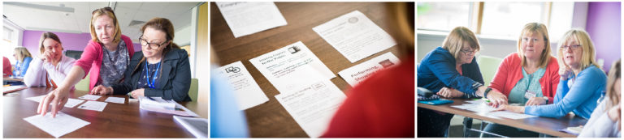

Copyright the card game
Background
I facilitated a Copyright the Card game session along with Academic Liaison Librarian Helen Beardsley on 27th of March 2019 with Helen Beardsley. The session was part of the Teaching Bites series run by Academic Development that saw a significant contribution from learning technologists and librarians.

This was the second time I have facilitated a session based on Copyright the Card Game. My first session was part of the inaugural Learning and Teaching Conference at the University of the Highlands and Islands in 2016. I first encountered Copyright the Card Game through Twitter, where the work of its creators Jane Secker and Chris Morrison are shared regularly. The game seemed very popular at education and library conferences, and it seemed like a very effective way of encouraging engagement with and an understanding of copyright in education.
I was particularly drawn to the way that the game approached copyright from a positive perspective based on what you can do rather than the traditional policing approach that focuses on what you can’t do. I have had experience of both the positive and policing perspectives in different jobs, and I have found the the policing approach often leads to disengagement while the positive approach can lead effective engagement with the subject. The positive approach also leads to a far greater impact on educational practice.
In both sessions it was clear that the use of realistic scenarios for the institutions the sessions were being delivered for was a clear benefit. We were able to place scenarios that participants might encounter in the game, and this ensured that the game was directly related to real practice.
University of Stirling session
While planning the session for March 2019 we had to modify the game to suit the shorter session that was available to us. The original version of the game is based on a session that takes between 90 minutes and 3 hours. The longer session allows for running multiple rounds in details, incorporating breaks and giving more opportunity to introduce key topics. For the Teaching Bite the maximum length of the session was 1 hour.
To suit this shorter timescale we changed the structure to focus on the more complex scenarios towards the end of the game and use the earlier rounds as an introduction. Only the final round was played as a competition to fit with the shorter time frame. Early rounds were used as collaborative and formative rounds to introduce concepts and considerations that would be put into practice in the final rounds. This suited the limited time we had for the session, and it allowed us to get to detailed examples where teams had to engage with detailed examples that drew on everything that had come before.
This modified structure and the tailoring of scenarios to suit situations staff at the University of Stirling proved to be incredibly beneficial. Participants were able to examine the scenarios, present their responses and justify their choices. The participants came to the session with varied levels of knowledge and experience with copyright issues. In the final round all participants demonstrated a significant understanding of how they are able to use third party resources in different scenarios, and it was clear that they were now thinking about how the particular context affects usage.